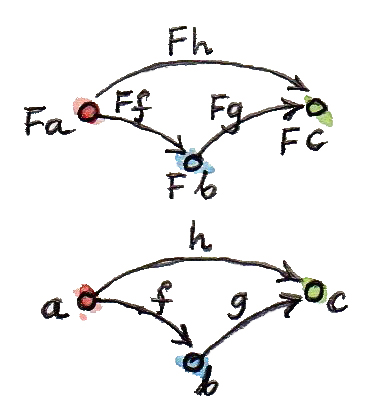
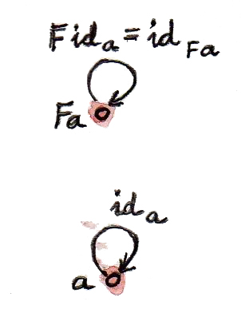
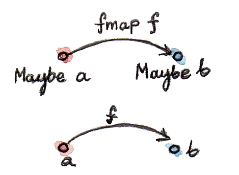

8 Functors (Draft)
ในความเสี่ยงที่ผมจะฟังดูเหมือนแผ่นเสียงตกร่อง ผมจะพูดเกี่ยวกับfunctor functorคือideaที่เรียบง่ายแต่มีความสามารถมาก ทฤษฎีcategoryนั้นเต็มไปด้วยideaเหล่านี้ที่เรียบง่ายแต่มีความสามารถมาก functorคือการโยงระหว่างcategoryต่างๆ ถ้ามีcategoryอยู่สองตัวอย่าง\(\textbf{C}\)และ\(\textbf{D}\) functor\(F\)จะโยงวัตถุใน\(\textbf{C}\)ไปยังวัตถุใน\(\textbf{D}\) (มันคือfunctionของวัตถุ) ถ้า\(a\)คือวัตถุใน\(\textbf{C}\)เราก็จะเขียนimageของมันใน\(\textbf{D}\)ว่า\(Fa\) (ไม่มีวงเล็บ) แต่categoryนั้นไม่ได้เป็นแค่วัตถุ มันคือวัตถุและmorphismที่ทำการต่อวัตถุเข้าด้วยกัน functorนั้นโยงmorphismต่างๆเข้าด้วยกัน มันคือfunctionของmorphismแต่มันไม่ได้แต่โยงเพียงอย่างเดียว แต่มันก็เก็บรักษาการเชื่อมต่อ(ระหว่างกัน)ด้วย ดังนั้นถ้าmorphism\(f\)ใน\(\textbf{C}\)ต่อวัตถุ\(a\)กับวัตถุ\(b\)อย่าง
\[ f::a\rightarrow b \]
imageของ\(f\)ใน\(\textbf{D}\)ก็คือ\(Ff\)เราจะสามารถต่อimageของ\(a\)ไปยังimageของ\(b\)
\[ Ff::Fa\rightarrow Fb \]
(นื่คือส่วนผสมระหว่างสัญกรณ์ทางคณิตศาสตร์และHaskellที่หวังว่าจะเข้าใจได้ง่ายในตอนนี้ ผมจะไม่ไช่วงเล็บในการใช้functorต่อobjectหรือmorphism)

จากที่คุณได้เห็นfuntorมันเก็บรักษาโครงสร้างของcategoryไว้ด้วย สิ่งที่ต่อกันในcategoryหนึ่งก็จะถูกต่อกันในอีกcategoryหนึ่ง แต่มันก็มีบางอย่างที่มากกว่าในโครงสร้างของcategory นั้นคือการประกอบกันของmorphism ถ้า\(h\)คือการประกอบกันระหว่าง\(f\)และ\(g\)
\[ h=g.f \]
เราต้องการให้imageของมันภายใต้\(F\)เป็นการประกอบกันของimageของ\(f\)และ\(g\)
\[ Fh = Fg.Ff \]
สุดท้ายแล้วเราต้องการให้identity morphismใน\(\textbf{C}\)ถูกโยงไปยังidentity morphismใน\(\textbf{D}\)
\[ F\operatorname{id}_a = \operatorname{id}_{Fa} \]

ในที่นี้ \(\operatorname{id}_a\)คือidentityของวัตถุ\(a\)และ\(\operatorname{id}_{Fa}\)คือidentityของ\(Fa\)

สังเกตว่าเงื่อนไขเหล่านี้ทำให้functorเป็นสิ่งที่เข้มงวดกว่าfunctionทั่วๆไป functorจำเป็นต้องเก็บรักษาโครงสร้างของcategoryไว้ ถ้าคุณจิตนาการcategoryในฐานะกลุ่มของวัตถุที่ถูกผูกไว้ด้วยกันโดยเครือข่ายของmorphism functorนั้นไม่รับอนุญาติที่จะทำให้เกิดการฉีกขาดในโครงสร้างนี้ มันอาจจะนำวัตถุมารวมกัน มันอาจจะต่อmorphismหลายๆอันเข้าเป็นหนึ่งแต่มันจะไม่แยกออกจากกัน ข้อจำกัดที่ทำให้ไม่มีการฉีกขาดนั้นเหมือนกับเงื่อนไขของความต่อเนื่อง (continuity)ที่คุณอาจจะรู้มาจากcalculus ในความหมายแบบนี้ functorนั้นมีความต่อเนื่อง (ถึงแม้ความต่อเนื่องของfunctorจะเป็นเงื่อนไขที่เข้มงวดมากกว่านี้) เหมือนกับfunction functorอาจจะทำทั้งการควบรวม(collapsing)และฝังตัว(embedding) ด้านของการembedนั้นมีความสำคัญกว่าในตอนที่categoryเริ่มต้นนั้นเล็กกว่ามากเมื่อเทียบกับcategoryเป้าหมาย
ในด้านที่สุดโต่ง จุดเริ่มต้นสามารถเป็นcategoryที่มีวัตถุเดี่ยว(singleton category)ซึ่งเป็นcategoryที่มีหนึ่งวัตถุและmorphismตัวเดียว(นั้นก็คือidentity) functorจากcategoryที่มีวัตถุเดี่ยวไปยังcategoryอื่นๆนั้นคือแค่การเลือกวัตถุในcategory นี่มีความคล้ายคลึงกันเป็นอย่างมากกับคุณสมบัติของmorphismsจากsetที่มีสมาชิกเดี่ยวที่ทำการเลือกสมาชิกในsetเป้าหมาย functorที่ทำการควบรวมที่มากที่สุด(maximally collapsing)นั้นถูกเรียกว่าfunctorคงที่(constant functor)\(\Delta_c\) มันโยงวัตถุทุกๆชิ้นในcategoryเริ่มต้นไปยังวัตถุที่ถูกเลือก\(c\)ในcategoryเป้าหมาย มันก็โยงทุกๆmorphismในcategoryเริ่มต้นไปยังmorphismที่เป็นidentity\(\operatorname{id}_c\)ด้วยเช่นด้วยกัน มันกระทำเหมือนหลุมดำที่อัดทุกๆอย่างให้แน่นจนเป็นเอกพจน์ เราจะเห็นfunctorนี้มากขึ้นในตอนที่เราพูดคุยเกี่ยวกับlimitและcolimit
8.1 Functorในการเขียนโปรแกรม
เราลองลงมาและพูดคุยเกี่ยวกับการเขียนโปรแกรม เรามีcategoryของเราที่เป็นtypesและfunctions เราสามารถที่จะพูดเกี่ยวกับfunctorที่โยงcategoryนี้ไปยังตัวเอง (functorแบบนี้จะถูกเรียกว่าendofunctor) แล้วอะไรคือendofunctorในcategoryของtypes อย่างแรกคือมันโยงtypeไปยังtype เราได้เห็นในตัวอย่างของการโยงแบบนี้แล้วโดยที่อาจจะไม่รู้ตัวว่าพวกมันคืออะไร ผมกำลังพูดถึงเกี่ยวกับนิยามของtypeที่ถูกparamterizedโดยtypeอื่นๆ เรามาลองดูตัวอย่างบางตัว
8.1.1 Functor Maybe
นิยามของMaybeนั้นคือการโยงจากtypeaไปยังtypeMaybe a
data Maybe a = Nothing | Just aนี่คือความละเอียดอ่อนที่สำคัญ Maybeในตัวมันเองไม่ใช่typeแต่คือconstructorของtype คุณต้องให้argumentกับมันอย่างtype IntและBoolเพื่อในการที่จะเปลี่ยนมันให้เป็นtype Maybeที่ไม่มีargumentนั้นแสดงเป็นfunctionบนtype แต่เราสามารถที่จะเปลี่ยนMaybeไปยังfunctorได้หรือเปล่า (ตั้งแต่ตอนนี้ในตอนที่ผมพูดถึงfunctorในบริบทของการเขียนโปรแกรม ผมจะหมายถึงendofunctorsแทบทุกครั้ง) functionนั้นไม่ได้แค่เป็นการโยงระหว่างobject(ในที่นี้คือtype)แต่ก็ทำการโยงระหว่างmorphism(ในที่นี้คือfunctions) สำหรับfunctionใดๆก็ตามจากaไปยังb
f :: a -> bเราอยากที่จะสร้างfunctionจากMaybe aไปยังMaybe b ในการนิยามfunctionแบบนี้เราจะต้องคิดถึงสองกรณีที่มาคู่กับconstructorทั้งสองของMaybe ในกรณีของNothingนั้นง่ายดาย เราจะแค่returnNothingกลับมา และถ้าargumentคือJustเราจะใช้functionfไปยังสมาชิกนั้น ดังนั้นimageของfภายใต้Maybeคือfunction
f' :: Maybe a -> Maybe b
f' Nothing = Nothing
f' (Just x) = Just (f x)(อนึ่งในHaskellคุณสามารถที่จะใช้apostrophesในชื่อของตัวแปร สิ่งนี้มีประโยชน์ในกรณีนี้) ในHaskellเราสามารถเขียนด้านการโยงกันของmorphismของfunctorในฐานะfunctionที่เป็นhigher orderที่เรียกว่าfmap ในกรณีนี้ของMaybeมันก็มีsignatureดังต่อไปนี้
fmap :: (a -> b) -> (Maybe a -> Maybe b)
เรามักจะพูดว่าfmaplift(ยก)function ในfunctionที่ถูกยก กระทำบนค่าของMaybe ในที่ทั่วไปsignatureอาจจะถูกตีความในสองรูปแบบ ในฐานะfunctionที่มีargumentเดี่ยว เพราะว่าการcurrying ที่ตัวมันเองคือfunctionของ(a -> b) ที่return functionเป็น(Maybe a -> Maybe b) หรือในฐานะfunctionของargumentสองตัวและreturnMaybe bอย่าง
fmap :: (a -> b) -> Maybe a -> Maybe bในการใช้สิ่งที่คุยกันก่อนหน้านี้ นี่คือการที่เราเขียนfmapสำหรับMaybe
fmap _ Nothing = Nothing
fmap f (Just x) = Just (f x)ในการที่จะแสดงว่าconstructorของtypeMaybeคู่กับfunctionfmapในรูปแบบของfunctor เราต้องพิสูจน์ว่าfmapเก็บรักษาidentityและการประกอบของfunction สิ่งเหล่านี้ถูกเรียกว่า”กฎของfunctor”แต่พวกมันก็แค่รับประกันการรักษาโครงสร้างของcategory
8.1.2 การให้เหตุผลทางสมการ (Equational Reasoning)
ในการพิสูจน์กฎของfunctor ผมจะใช้การให้เหตุผลทางสมการที่ก็คือtechniqueในการพิสูจน์ในHaskell มันใช้ข้อได้เปรียบของความจริงที่ว่าfunctionของHaskellนั้นถูกนิยามในฐานะความเท่ากัน(equalities) ของด้านช้ายมือเท่ากับด้านขวามือ คุณสามารถที่จะแทนที่ตัวหนึ่งด้วยอีกตัวหนึ่งได้ตลอด เพื่อที่จะเป็นการเปลี่ยนชื่อตัวแปลใหม่เพื่อที่จะหลีกเลี่ยงชื่อชำ้ในบางครั้ง คิดถึงแบบนี้ในฐานะการ inlining functionsหรือในอีกทางหนึ่ง เป็นการrefactorของexpressionให้เป็นfunction เรามาลองนำidentity functionมาใช้ในฐานะตัวอย่าง
id x = xต้วอย่างเช่น ถ้าคุณเห็นid yในexpressionบางตัวคุณสามารถที่จะแทนที่มันด้วยy(การinlining) นอกเหนือไปจากนี้ถ้าคุณเห็นidถูกใช้กับexpressionอย่างid (y + 2)คุณสามารถที่จะแทนที่มันด้วยexpressionมันเองอย่าง(y + 2)และการแทนที่แบบนี้สามารถทำได้ในทั้งสองวิธี คุณสามารถแทนที่expressionใดๆก็ตามอย่างeด้วยid e (การrefactoring) ถ้าfunctionถูกนิยามโดนการจับคู่รูปแบบคุณสามารถที่จะใข้expressionย่อยอย่างอิสระ ตัวอย่างเช่นถ้าเรามี ในนิยามข้างบนของfmapคุณสามารถที่จะแทนที่fmap f Nothingด้วยNothingหรือในทางกลับกัน เรามาดูในวิธีการที่สิ่งนี้จะถูกใช้ในทางปฏิบัติ เรามาเริ่มด้วยการรักษาidentityไว้
fmap id = idเรามีกรณีสองกรณีที่จะต้องพิจารณา NothingและJust นี่คือกรณีแรก(ผมกำลังใช้pseudo-codeของHaskellในการเปลี่ยนด้านช้ายไปยังด้านขวา)
fmap id Nothing
= { นิยามของ fmap }
Nothing
= { นิยามของ id }
id Nothingสังเกตได้ว่าในขั้นตอนสุดท้ายผมได้ใช้นิยามของidในทางย้อนกลับ ผมแทนที่expressionของNothingด้วยid Nothing ในทางปฏิบัติแล้วคุณจะทำการพิสูจน์ในแบบนี้โดยการ”เผาเทียนทั้งสองข้าง”1 (“burning the candle at both ends”) จนคุณไปถึงยังexpressionที่เหมือนกันในระหว่างทาง ในที่นี้คือNothingในกรณีที่สองนั้นก็ง่ายเช่นกัน
fmap id (Just x)
= { นิยามของ fmap }
Just (id x)
= { นิยามของ id }
Just x
= { นิยามของ id }
id (Just x)ในตอนนี้เรามาแสดงให้เห็นว่าfmapรักษาการประกอบกันไว้
fmap (g . f) = fmap g . fmap fเริ่มแรกในกรณีของNothing
fmap (g . f) Nothing
= { นิยามของ fmap }
Nothing
= { นิยามของ fmap }
fmap g Nothing
= { นิยามของ fmap }
fmap g (fmap f Nothing)และในกรณีของJust
fmap (g . f) (Just x)
= { นิยามของ fmap }
Just ((g . f) x)
= { นิยามของ composition }
Just (g (f x))
= { นิยามของ fmap }
fmap g (Just (f x))
= { นิยามของ fmap }
fmap g (fmap f (Just x))
= { นิยามของ composition }
(fmap g . fmap f) (Just x)มันสำคัญที่จะเน้นว่าการให้เหตุผลทางสมการไม่สามารถทำได้ในรูปแบบ”function”แบบC++ที่มีผลข้างเคียง(side effects)ลองดูโค้ดดังต่อไปนี้
int square(int x) {
return x * x;
}
int counter() {
static int c = 0;
return c++;
}
double y = square(counter());โดยการใช้การให้เหตุผลทางสมการคุณอาจจะสามารถที่จะinlinesquareอย่าง
double y = counter() * counter();มันนั้นไม่ใช่การเปลี่ยนแปลงที่ถูกต้องอย่างแน่นอนและมันจะไม่ผลิตผลลัพธ์ที่เหมือนกัน ถึงอย่างนี้compilerของC++จะพยายามที่จะใช้การให้เหตุผลทางสมการ แล้วถ้าคุณเขียนsquareในฐานะmacroด้วยผลลัพธ์ที่ได้ก็จะเป็นหายนะ
8.1.3 Optional
Functorนั้นง่ายที่จะแสดงออกมาในHaskellแต่พวกมันสามารถที่จะถูกนิยามในทุกๆภาษาที่รองรับการเขียนโปรแกรมแบบgenericและfunction higher orderเรามาลองพิจารณาMaybeในรูปแบบของC++อย่างtype templateoptional นี่คือการเขียนแบบคร่าวๆ (ในการเขียนจริงๆนั้นชับช้อนกว่านี้มาก ต้องทำงานกับหลายวิธีในการที่argumentสามารถถูกนำเข้ามาคู่กับ copy semanticsและคู่กับปัญหาการจัดการทรัพยากรต่างๆที่เป็นลักษณะของC++)
template<class T>
class optional {
bool _isValid; // the tag
T _v;
public:
optional() : _isValid(false) {} // Nothing
optional(T x) : _isValid(true) , _v(x) {} // Just
bool isValid() const { return _isValid; }
T val() const { return _v; } };templateนี้ได้ให้คำนิยามส่วนหนึ่งของfunctorที่คือการโยงระหว่างtypeต่างๆมันโยงtypeTไปยังtypeใหม่optional<T>เรามาลองนิยามพฤติกรรมของมันบนfunction
template<class A, class B>
std::function<optional<B>(optional<A>)>
fmap(std::function<B(A)> f) {
return [f](optional<A> opt) {
if (!opt.isValid())
return optional<B>{};
else
return optional<B>{ f(opt.val()) };
};
}มันคือfunctionแบบhigher orderที่นำfunctionเข้ามาเป็นargumentและreturn functionออกมา นี่คือการเขียนแบบที่ไม่ได้ถูกcurryของมัน
template<class A, class B>
optional<B> fmap(std::function<B(A)> f, optional<A> opt) {
if (!opt.isValid())
return optional<B>{};
else
return optional<B>{ f(opt.val()) };
}ได้มีตัวเลือกในการทำให้fmapที่เป็นmethodแบบtemplateของoptional ความลำบากใจของตัวเลือกเหล่านี้ทำให้การabstratingของpatternแบบfunctorในC++มีปัญหา functorควรที่จะเป็นinterfaceต้องinheritมันหรือเปล่า? (น่าเสียดายที่คุณไม่สามารถมีfunctionที่เป็นvirtualและtemplate) มันควรที่เป็นfunctionแบบtemplateที่freeแบบcurryหรือไม่มีการcurry complierของC++สามารถที่จะอนุมาน(infer)typeต่างๆที่หายไปได้หรือเปล่า? หรือพวกมันควรที่จะถูกระบุไว้อย่างชัดเจน ลองพิจารณาสถานการณ์ที่function inputfที่นำintไปยังbool แล้วcomplierควรที่จะหาtypeของgอย่างไร?
auto g = fmap(f);โดยเฉพาะเช่นถ้าในอนาคตได้มีfunctorหลายตัวที่overloadfmap (เราก็จะเห็นfunctorมากขึ้นในอีกไม่ช้า)
8.1.4 Typeclasses
แล้วHaskellจัดการกับการabstracting functorได้อย่างไร มันใช้กลไกของtypeclass typeclassนิยามกลุ่มของtypeต่างๆที่มีinterfaceที่เหมือนกัน ตัวอย่างเช่นclassของวัตถุที่สามารถเทียบความเท่ากันได้ก็จะถูกนิยามไว้ว่าอย่านี้
class Eq a where
(==) :: a -> a -> Boolนิยามนี้เขียนว่าtypeaเป็นของclassEqถ้ามันสามารใช้operator(==)ได้ โดยที่นำarguementสองตัวของtypeaและreturnBoolกลับมา ถ้าคุณอยากที่จะบอกHaskellว่าtypeบางtypeเฉพาะคือEqคุณต้องการที่จะประกาศมันเป็นinstanceของclassนี้และจัดเตรียมการเขียนของ(==) ตัวอย่างเช่นถ้ามีนิยามของPointที่เป็นสองมิติ (คือtypeแบบproductของFloat)
data Point = Pt Float Floatคุณก็สามารถที่จะนิยามความเท่ากันของpointต่างๆ
instance Eq Point where
(Pt x y) == (Pt x' y') = x == x' && y == y'ในที่นี้ผมใช้operator(==) (ก็คือตัวที่ผมกำลังนิยาม)ในตำแหน่งของinfixระหว่างสองรูปแบบ(Pt x y)และ(Pt x' y') ส่วนbodyของfunctionตามหลังเครื่องหมายเท่ากับที่มีตัวเดียว หลังจากที่Pointถูกประกาศเป็นinstanceของEqคุณสามารถที่จะเปรียบเทียบpointsต่างๆสำหรับความเท่ากัน สังเกตว่า ไม่เหมือนกับC++หรือJavaคุณไม่ต้องทำการระบุclassของEq(หรือinterface)ในตอนที่นิยามPoint คุณสามารถที่จะทำมันในcodeของผู้ใช้หลังจากนี้ Typclassนั้นก็เป็นแค่กลไกเดียวในการoverload function(และoperator) เราต้องการสิ่งนี้สำหรับการoverloadfmapสำหรับfunctorต่างๆกัน แต่ก็มีความยุ่งยากอยู่ functorที่ไม่ได้ถูกนิยามในฐานะtypeแต่ในฐานะการโยงระหว่างtype(constructorของtype) เราต้องการtypeclassที่ไม่ใช่กลุ่มของtypeในที่เหมือนกับกรณีของEqแต่เป็นกลุ่มของconstructorของtype โชคดีที่ว่าtypeclassของHaskellนั้นสามารถทำงานกับconstructorของtypeได้ดีเหมือนกับทำงานกับtypeดังนั้นนี่คือนิยามของclassFunctor
class Functor f where
fmap :: (a -> b) -> f a -> f bมันกำหนดว่าfคือFunctorถ้ามันมีfunctionfmapคู่กับsignatureของtypeที่ระบุไว้แล้ว ตัวพิมพ์เล็กfคือตัวแปลแบบtypeเหมือนกับตัวแปลแบบtypeaและb แต่complierนั้นสามารถที่จะอนุมานว่ามันแสดงเป็นconstructorของtypeแทนที่จะเป็นtypeโดยการที่มันดูการใช้งานของมันนั่นก็คือการกระทำบนtypeอื่นๆอย่างf aและf b ดังนั้นในการประกาศinstanceของFunctorคุณต้องให้constructorของtypeกับมันในเหมือนกับในกรณีของMaybe
instance Functor Maybe where
fmap _ Nothing = Nothing
fmap f (Just x) = Just (f x)อนึ่งclassFunctorรวมไปถึงนิยามของinstanceต่างๆสำหรับtypeแบบข้อมูลที่เรียบง่ายต่างๆและMaybe นั้นก็เป็นส่วนหนึ่งฃองlibrary Preludeมาตรฐาน
8.1.5 FunctorในC++
เราสามารถที่จะลองวิธีคล้ายๆกันในC++ได้หรือเปล่า? constructorของtypeนั้นมีลักษณะเช่นเดียวกันกับclassแบบtemplateเหมือนoptional ดังนั้นโดยการเปรียบเทียบแล้วเราคงที่จะทำการparameterizedfmapคู่กับtemplate template parameterF และนี่คือsyntaxของมัน
template<template<class> F, class A, class B>
F<B> fmap(std::function<B(A)>, F<A>);เราอยากที่จะสามารถที่จะทำให้templateนี้มีความเฉพาะเจาะจงสำหรับfunctorต่างๆกัน น่าเสียดายที่มันมีการป้องกันไม่ให้มีการทำการเฉพาะเจาะจงในบางส่วน(partial specialization) ของfunctionแบบtemplateในC++ นั้นก็คือคุณไม่สามารถเขียนดังนี้
template<class A, class B>
optional<B> fmap<optional>(std::function<B(A)> f, optional<A> opt)ดังนั้นคุณต้องกลับไปยังการoverload functionที่จะทำให้เรากลับมายังนิยามดั้งเดิมของfmapที่ไม่ได้ถูกcurry
template<class A, class B>
optional<B> fmap(std::function<B(A)> f, optional<A> opt) {
if (!opt.isValid())
return optional<B>{};
else
return optional<B>{ f(opt.val()) };
}นิยามนี้สามารถใช้ได้ แต่ก็เพราะว่าargumentที่สองของfmapนั้นทำการเลือกสิ่งที่overload มันจึงละเลยนิยามที่ทั่วๆไปของfmapไปทั้งหมด
8.1.6 FunctorของList
ในการที่จะได้ความเข้าใจกับหน้าที่ของfunctorในการเขียนโปรแกรม เราอาจจะต้องลองดูตัวอย่างที่มากกว่านี้ ในtypeใดๆก็ตามที่ถูกparamterizedโดยอีกtypeหนึ่งมีคุณสมบัติที่จะเป็นfunctor containerแบบทั่วไป(generic container)ถูกparamterizedโดยtypeของสมาชิกที่มันเก็บอยู่ ดังนั้นเรามาดูcontainerที่เรียบง่ายอย่างมากนั้นก็คือlist
data List a = Nil | Cons a (List a)เรามีconstructorของtypeListที่ก็เป็นการโยงจากtypeใดๆก็ตามaไปยังtypeของList a ในการแสดงว่าListคือfunctorเราต้องนิยามการliftของfunctionนั่นก็คือ ถ้าเรามีfunctiona -> bจงนิยามfunctionList a -> List b
fmap :: (a -> b) -> (List a -> List b)functionที่กระทำบนList aต้องถูกพิจารณาในสองกรณีที่ตรงกับcostructorทั้งสองของlist ในกรณีของNilนั้นตรงไปตรงมาแค่returnNilกลับมา มันไม่มีอะไรมากที่คุณทำได้กับlistว่าง ในกรณีของConsนั้นอาจจะยุ่งยากนิดหนึ่งเพราะมันเกี่ยวข้องกับการrecursion ดังนั้นเรามาถอยไปก้าวหนึ่งในตอนนี้และพิจารณาในสิ่งที่เราจะทำ เรามีlistของa functionfที่เปลี่ยนaไปยังbและเราต้องการที่จะผลิตlistของb สิ่งที่ชัดเจนที่สุดคือการใช้fในการเปลี่ยนสมาชิกของlistจากaไปยังb เราจะทำแบบนี้ในทางปฏิบัติอย่างไรถ้าเรามีlist(ที่ไม่ว่าง)ที่ถูกนิยามในแบบConsของหัว(head)และหาง(tail)? เราใช้fไปยังส่วนหัวและใช้fที่ถูกlift(ถูกfmap)ไปยังส่วงหาง นี่คือนิยามที่recursiveเพราะว่าเรานิยามfที่ถูกliftในรูปแบบของfที่ถูกlift
fmap f (Cons x t) = Cons (f x) (fmap f t)สังเกตว่าในด้านขวามือfmap fนั้นถูกใช้ในlistที่มีสั้นกว่าlistที่เรากำลังนิยามมัน มันถูกใช้กับส่วนหาง เราใช้ช้ำ(recurse)กับlistที่สั้นลงไป ดังนั้นเราจะต้องทำไปจนถึงlistว่างอย่างแน่นอนหรือNil แต่ในการที่เราได้ตัดสินใจแล้วก่อนหน้านี้ว่า fmap fที่กระทำบนNilจะคืนNilกลับมา ดังนั้นเป็นการยุติการrecursion ในการที่จะได้ผลลัพธ์สุดท้าย เราต้องรวมส่วนหัวใหม่(f x)คู่กับส่วนหางใหม่(fmap f t)โดยการใช้constructorCons นำสิ่งเหล่าทั้งหมดนี้มารวมเข้าด้วยกัน นี่คือการประกาศinstanceสำหรับfunctorของlist
instance Functor List where
fmap _ Nil = Nil
fmap f (Cons x t) = Cons (f x) (fmap f t)ถ้าคุณสะดวกกับC++มากกว่าลองพิจารณากรณีของstd::vectorที่สามารถที่จะคิดเป็นcontainerของC++ที่ทั่วไปที่สุด การเขียนfmapสำหรับstd::vectorคือการencapsulationแบบไม่มากของstd::transform
template<class A, class B>
std::vector<B> fmap(std::function<B(A)> f, std::vector<A> v) {
std::vector<B> w;
std::transform( std::begin(v)
, std::end(v)
, std::back_inserter(w)
, f);
return w;
}ตัวอย่างเช่นเราสามารถที่ใช้มันในการทำการกำลังสองของลำดับของตัวเลข
std::vector<int> v{ 1, 2, 3, 4 };
auto w = fmap([](int i) { return i*i; }, v);
std::copy( std::begin(w)
, std::end(w)
, std::ostream_iterator(std::cout, ", "));ในcontainerหลายๆตัวของC++เป็นfunctorจากการเขียนiteratorที่สามารถที่จะถูกนำไปยังstd::transformที่เป็นญาติที่ดั้งเดิมกว่าของfmap น่าเสียดายที่ความเรียบง่ายของfunctorนั้นหายไปในความรุงรังของiteratorsและtemporaries(ลองดูในการเขียนfmapข้างบน) ผมดีใจที่จะพูดว่าlibary rangeของC++ที่ถูกเสนอจะทำให้ธรรมชาติของการเป็นfunctionalของrangeชัดเจนมากขึ้น
8.1.7 Reader Functor
ถึงตอนนี้คุณอาจที่จะได้พัฒนาความเข้าใจบางอย่าง(ตัวอย่างเช่นfunctionคือcontainerในรูปแบบหนึ่ง)ให้ผมได้แสดงกับคุณถึงตัวอย่างที่ในตอนแรกอาจจะดูแตกต่างอย่างมาก ลองพิจารณาการโยงของtypeaไปยังtypeของfunctionที่returnaกลับมา เรายังไม่ได้พูดเกี่ยวกับtypeของfunctionอย่างละเอียด (ในการพิจารณาแบบcategoryกำลังมา) แต่เราได้ทำความเข้าใจบางอย่างของสิ่งเหล่านี้ในฐานะโปรแกรมเมอร์ ในHaskell typeแบบfunctionนั้นถูกสร้างโดยการใช้constructorของtypeแบบลูกศร(->) ที่นำtypeสองประเภทคือtypeของargumentและtypeของผลลัพธ์ คุณได้เห็นมันแล้วในรูปแบบของinfixa -> bแต่มันสามารถที่จะถูกใช้ในแบบดียวกันในรูปแบบของprefixในตอนที่ครอบโดยวงเล็บ
(->) a bเหมือนกับfunctionทั่วๆไปfunctionแบบtypeที่มีargumentมากกว่าหนึ่งสามารถที่จะถูกใช้ในบางส่วน ดังนั้นเราได้ให้แค่argumentแบบtypeกับลูกศร มันก็กำลังคาดหวังอีกตัวหนึ่งอยู่เหมือนเดิม นั้นก็เพราะว่า
(->) aคือconstructorของtype มันต้องการtypebเพิ่มเพื่อที่จะสร้างtypea -> bที่สมบูรณ์ ในตอนที่มันเป็นอยู่ มันนิยามกลุ่มทั้งหมดของconstructorแบบtypeที่ถูกparameterizedโดยa เรามาลองดูว่าถ้ามันก็เป็นกลุ่มของfuntorด้วยหรือเปล่า ในการทำงานกับparameterแบบtypeสองตัวอาจจะทำให้สับสนเล็กน้อย ดังนั้นเรามาทำการเปลี่ยนชื่อ เราจะเรียกtypeของargumentrและtypeของreturnaและโยงมันไปยังtyper -> a ในการแสดงว่ามันคือfunctorเราต้องการที่จะlift functiona -> bไปยังfunctionที่นำr -> aเข้ามาและreturnr -> bออกไป สิ่งเหล่านี้คือtypeที่ถูกสร้างโดยการใข้constructorของtype(->) rที่กระทำบนaและbตามลำดับ ที่คือsignatureของtypeของfmapที่เข้ากับกรณีนี้
fmap :: (a -> b) -> (r -> a) -> (r -> b)เราต้องแก้ปัญหาดังต่อไปนี้: ถ้าเรามีfunctionf :: a -> bและfunctionf :: r -> aจงสร้างfunctionr -> b ได้มีวิธีเดียวคืกการประกอบfunctionทั้งสองและผลลัพธ์คือสิ่งที่เราต้องการอย่างแน่นอน ดังนั้นนี่คือการเขียนfmapของเรา
instance Functor ((->) r) where
fmap f g = f . gมันใช้ได้! ถ้าคุณชอบที่จะมีรูปแบบที่กระชับ นิยามนี้สามรถที่จะถูกลดโดยการที่เราสังเกตได้ว่า การประกอบกันสามารถถูกเขียนใหม่ในรูปแบบของprefix
fmap f g = (.) f gและarguemntต่างๆสามารถที่จะละเว้นเพื่อที่จะได้มาซึ่งความเท่ากับแบบตรงๆของทั้งสองfunction
fmap = (.)การรวามกันของconstructorของtype(->) rกัยการเขียนfmapข้างบนถูกเรียกว่าreader functor
8.2 FunctorsในฐานะContainers
เราได้เห็นแล้วในบางตัวอย่างของfunctorในภาษาโปรแกรมที่นิยามcontainerที่มีจุดประสงค์ทั่วไป หรืออย่างน้อยเป็นวัตถุต่างๆที่เก็บข้อมูลบางอย่างของtypeที่พวกมันparameterizedข้างบนtypeพวกนี้ reader functorอาจจะดูเหมือนสิ่งที่แปลกแยกออกไปก็เพราะว่าเราไม่ได้คิดถึงfunctionในฐานะข้อมูล แต่เราได้เห็นแล้วว่าfunctionที่pureสามารถถูกจำได้และการกระทำของfunctionสามารถที่จะแปลงให้เป็นตารางค้นหา ตารางก็เป็นข้อมูล ในทางกลับกันก็เพราะว่าความlazyของHaskell containerแบบดั้งเดิมอย่างlistอาจจะถูกเขียนในฐานะfunction ตัวอย่างเช่นรองพิจารณาlistที่ไม่มีที่สิ้นสุดของจำนวนธรรมชาติที่สามารถถูกนิยามได้แบบกระชับว่า
nats :: [Integer]
nats = [1..]ในบรรทัดแรกที่เป็นคู่ของวงเล็บเหลี่ยม(square brackets)คือconstructorของtype built-inของHaskellสำหรับlist ในบรรทัดที่สองวงเล็บเหลี่ยมถูกใช้ในการสร้างliteralของlist ชัดเจนว่าlistที่ไม่มีที่สิ้นสุดไม่สามารถที่จะถูกเก็บไว้ได้ในหน่วยความจำ โดยที่complierจะทำการเขียนมันในฐานะfunctionที่สร้างIntegerในตอนที่ต้องใช้(on demand) Haskellนั้นได้ละลายความแตกต่างระหว่างข้อมูลกับโค้ดอย่างชัดเจน(effectively) listสามารถถูกพิจารณาให้เป็นfunctionและfunctionสามารถที่ขะถูกพิจารณาเป็นตารางที่โยงargumentไปยังผลลัพธ์ อย่างหลังสามารถที่จะใช้ในทางปฏิบัติถ้าdomainของfunctionนี้นั้นมีจำกัด(finite)และไม่ใหญ่จนเกินไป แต่มาอาจจะไม่ไช่ได้้ในทางปฏิบัติกับการเขียนstrlenในฐานะตารางค้นหาเพราะว่ามีจำนวนstringที่แตกต่างกันไม่มีที่สิ้นสุด ในฐานะนักเขียนโปรแกรม เราไม่ชอบความไม่มีที่สิ้นสุดแต่ในทฤษฎีcategoryคุณได้เรียนรู้ในการกินความไม่มีที่สิ้นสุดเป็นอาหารเช้า ไม่ว่าจะเป็นsetของstringทั้งหมดหรือกลุ่มของstateที่เป็นไปได้ทั้งหมดในUniverse, อดีต, ปัจจุบันและอนาคต เราสามารถทำงานกับมันได้ ดังนั้นผมอยากที่จะคิดถึงวัตถุfunctor(วัตถุของtypeที่ถูกสร้างโดยendofunctor)ในฐานะที่กักเก็บค่าหรืิอค่าต่างๆของtypeที่มันparameterizedไว้ ถึงแม้ถ้าค่าต่างๆเหล่านี้นั้นไม่มีอยู่ในรูปแบบทางวัตถุเต็มๆ หนึ่งในตัวอย่างของfunctorคือstd::futureของC++ที่ในบางเวลาอาจจะเก็บค่าไว้อยู่ แต่มันไม่รับประกันว่ามีจะมีอยู่และถ้าคุณอยากที่จะเข้าถึงมัน คุณอาจจะถูกปิดกั้นโดยให้รออีกthreadทำการดำเนินการให้เสร็จก่อน อีกตัวอย่างคือวัคถุIOของHaskellที่อาจจะเก็บinputของผู้ใช้ หรือรูปแบบอนาคตของUniverseที่“Hello World!”ถูกฉายบนหน้าจอ ถ้าตามการตีความแบบนี้วัตถุfunctorคือบางอย่างที่อาจจะเก็บค่าหรือค่าต่างๆของtypeที่มันparameterizedอยู่ หรือมันอาจจะเก็บสูตรในสร้างค่าเหล่านี้ เราไม่ได้สนใจเลยเกี่ยวกับความสามารถในการเข้าถึงค่าพวกนี้สิ่งนี้นั้นไม่จำเป็นและอยู่นอกเหนือขอบเขตของfunctor สิ่งที่เราสนใจคือแค่การแปลงเปลี่ยนข้อมูลเหล่านี้โดยfunctionเท่านั้น ถ้าค่าต่างๆสามารถถูกเข้าถึงได้แล้วเราควรที่จะเห็นผลของการแปลงเหล่านี้ แต่ถ้าเราไม่สามารถเข้าถึงได้ สิ่งที่เราสนใจมีอยู่แค่ว่าค่าต่างๆเหล่านี้สามารถถูกประกอบได้อย่างถูกต้องและจะไม่เปลี่ยนแปลงต่างๆโดยfunctionที่เป็นidentity เพื่อที่จะแสดงให้คุณเห็นว่าเราไม่สนใจเกียวกับการเข้าถึงค่าในวัคถุfunctorมากเท่าไหร่ นี่คือconstructorของtypeที่ไม่สนใจargumentaของมันแบบทั้งหมด
data Const c a = Const cconstructorของtypeConstนั้นนำtypeสองอย่างcและaเหมือนกับการที่เราทำในconstructแบบลูกศร เราจะใช้มันในบางส่วนเพื่อที่จะสร้างfunctor constructorของdata(หรือที่เรียกว่าConst)นำค่าๆหนึ่งของtypec มันเป็นอิสระกับa typeของfmapในconstructorของtypeนี้คือ
fmap :: (a -> b) -> Const c a -> Const c bเพราะว่าfunctorไม่สนใจargumentที่เป็นtype การเขียนของfmapจึงเป็นอิสระในการไม่สนใจargumentของfunction functionนี้ไม่ได้กระทำอะไรเลย
instance Functor (Const c) where
fmap _ (Const v) = Const vนี่อาจจะชัดเจนกว่าในC++(ผมไม่คิดว่าจะพูดคำนี้ออกมา)ที่ที่ได้มีการแยกกันระหว่างargumentแบบtypeที่ชัดเจน (ที่ในเวลาcompile)และค่าต่างๆที่ในตอนเวลาใช้งาน
template<class C, class A>
struct Const {
Const(C v) : _v(v) {}
C _v;
};การเขียนfmapในC++นั้นไม่สนใจargumentที่เป็นfunctionและก็ทำการre-cast argumentของConstจริงๆโดยที่ไม่ได้เปลี่ยนค่าของมัน
template<class C, class A, class B>
Const<C, B> fmap(std::function<B(A)> f, Const<C, A> c) {
return Const<C, B>{c._v};
}ถึงอย่างไรก็ตามกับความแปลกของมัน functorConstนั้นเล่นในบทบาทที่สำคัญในการสร้างหลายๆอย่าง ในทฤษฎีcategoryมันคือกรณีพิเศษของfunctor\(\Delta\)ที่ผมเอ่ยถึงก่อนหน้านี้ ที่เป็นของหลุมดำในendofunctor
8.3 การประกอบกันของFunctor
มันไม่ยากที่จะโน้มน้าวตัวเองว่าfunctorระหว่างcategoryนั้นประกอบเหมือนfunctionระหว่างsetประกอบกัน การประกอบกันของfunctorสองตัวในตอนที่กระทำบนวัตถุนั้นก็แค่การประกอบกันของการโยงวัตถุตามลำดับของพวกมัน และคล้ายๆกันในตอนที่มันกระทำบนmorphismหลังจากการผ่านfunctorทั้งสองmorphismที่เป็นidentityก็กลายมาเป็นmorphismที่เป็นidentityในที่สุด และการประกอบกันของmorphismก็จบด้วยการประกอบกันของmorphism มันไม่มีอะไรมากจริงๆ โดนเฉพาะการประกอบกันของendofuncttorก็ยิ่งง่าย จำfunctionmaybeTailได้หรือเปล่า? ผมจะเขียนมันใหม่โดยการใข้ listที่เขียนอยู่แล้วในbuilt inของHaskell
maybeTail :: [a] -> Maybe [a]
maybeTail [] = Nothing
maybeTail (x:xs) = Just xs(constructorของlistว่างที่เราใช้ในการเรียกNilนั้นถูกแทนที่ด้วยวงเล็บเหลี่ยมที่ว่าง[] constructorของConที่ถูกแทนที่ด้วยoperatorแบบinfix:) ผลของmaybeTailคือtypeที่เป็นการประกอบกันของfunctorสองตัวMaybeและ[]ที่กระทำบนa functorแต่ละตัวนั้นมีรูปแบบfmapเป็นของตนเอง แต่ถ้าเราต้องการที่จะใช้functionfบางตัวกับของที่อยู่ภายในของสิ่งที่ถูกประกอบlistMaybeละ? เราต้องทะลุผ่านสองชั้นของfunctors เราสามารถที่จะใช้fmapในการทะลุผ่านMaybeที่เป็นชั้นนอก แต่เราไม่สามารถแค่ส่งfข้างในMaybeเพราะว่าfทำงามไม่ได้ในlist เราต้องส่ง(fmap f)เพื่อที่จะให้ทำงานได้ในlistชั้นใน ตัวอย่างเข่น เรามาลองดูวิธีการที่เราจะที่การยกกำลังสองของสมาชิกในlistของMaybeของจำนวนเต็ม
square x = x * x
mis :: Maybe [Int]
mis = Just [1, 2, 3]
mis2 = fmap (fmap square) miscomplierหลังจากการวิเคราะห์typeต่างๆจะสามารถหาได้ว่าสำหรับfmapชั้นบนมันควรที่ใช้การเขียนจากinstanceของMaybeและในส่วนของชั้นล่างก็เป็นเขียนfunctorของlist มันอาจจะไม่ชัดเจนในทันที่ที่โค้ดข้างบนสามารถถูกเขียนใหม่ว่า
mis2 = (fmap . fmap) square misแต่จงจำไว้ว่าfmapอาจจะถูกพิจารณาfunctionที่มีแค่argumentหนึ่งตัว
fmap :: (a -> b) -> (f a -> f b)ในกรณีของเราfmapที่สองใน(fmap . fmap)นั้นนำสิ่งนี้ในฐานะargumentของมัน
square :: Int -> Intและreturn functionที่มีtypeดังต่อไปนี้
[Int] -> [Int]ในfmapแรกจะนำfunctionนี้เข้ามาและreturn functionกลับมา
Maybe [Int] -> Maybe [Int]สุดท้ายนี้functionนั้นถูกใช้กับmis ดังนั้นการประกอบกันของfunctorทั้งสองคือfunctorที่fmapคือการประกอบกันของหลายๆfmap ถ้ากลับไปยังทฤษฎีcategory มันชัดเจนมากที่การประกอบกันของfunctorนั้นเปลี่ยนหมู่ได้ (การโยงระหว่างวัตถุนั้นมีคุณสมบัติการเปลี่ยนหมู่และการโยงกันระหว่างmorphismนั้นก็มีคุณสมบัติการเปลี่ยนหมู่) และได้มีfunctorที่เป็นidentityอย่างชัดเจนในทุกๆcategory ที่จะโยงทุกๆวัตถุไปยังตัวเองและทุกๆmorphismไปยังตัวเอง ดังนั้นfunctorsก็มีคุณสมบัติของmorphismในบางcategory แต่categoryนั้นควรเป็นอะไร? มันก็คงเป็นcategoryที่วัตถุเป็นcategoryต่างๆและmorphismคือfunctorต่างๆ มันคือcategoryของcategory แต่categoryของcategoryทั้งหมดอาจจะรวมถึงตนเองและเราก็อาจจะได้paradoxในแบบเดียวกันที่ทำให้setของsetทั้งหมดเป็นไปไม่ได้ แต่ได้มีcategoryของcategoryขนาดเล็กที่ถูกเรียกว่า\(\textbf{Cat}\)(ที่ตัวมันเองนั้นใหญ่ดังนั้นจึงไม่สามารถเป็นสมาชิกของตนเอง) categoryเล็กคือcategoryที่วัตถุต่างทำให้เกิดเป็นset โดยที่ตรงกันข้ามกับบางอย่างที่ใหญ่กว่าset ในทฤษฎีcategoryแม้กระทั้งsetอนันต์ที่นับไม่ได้นั้นถูกมองว่า”เล็ก” ผมคิดว่าผมจะเอ่ยถึงสิ่งเหล่านี้เพราะว่าผมเห็นว่ามันค่อนข้างอัศจรรย์ที่เราสามารถที่จะมองเห็นโครงสร้างเดียวกันที่ทำซ้ำตัวมันเองในหลายขั้นของการabstraction เราจะเห็นหลังจากนี้ว่าfunctorก็ก่อให้เกิดcategoryได้เหมือนกัน
8.4 โจทย์ท้าทาย
- เราสามารถที่จะเปลี่ยนconstructorของtype
Maybeไปยังfunctorโดยการนิยาม
fmap _ _ = Nothingที่ไม่สนใจargumentทั้งสองของมัน (คำใบ้:ลองดูกฏของfunctor)
- ลองพิสูจน์กฏของfunctorสำหรับreader functor (คำใบ้:ค่อนข้างง่าย)
- ลองเขียนreader functorในภาษาโปรดลำดับสองของคุณ(แน่นอนว่าลำดับแรกคือHaskell)
- ลองพิสูจน์กฏของfunctorสำหรับfunctorของlist สมมติว่ากฏต่างๆนั้นถูกต้องสำหรับส่วนหางของlistที่คุณใช้มันกับ (ในอีกความหมายหนึ่งคือใช้indunction)
Homophone to เท่าเทียม too…↩︎